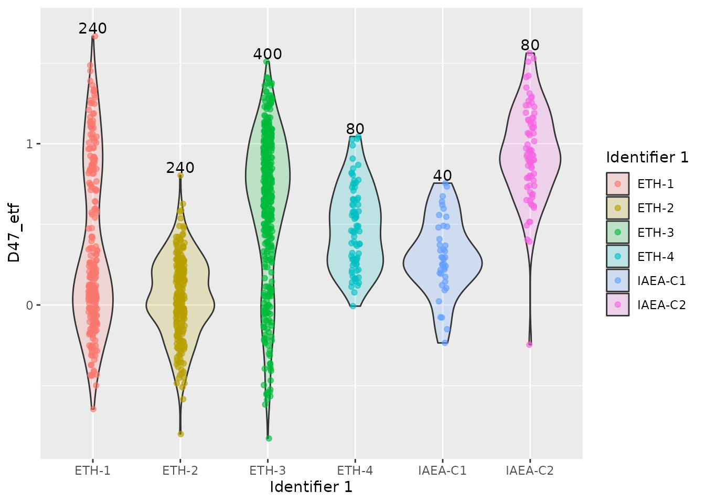

vignettes/clumped.Rmd
clumped.RmdOnce you have clumpedr installed (see the README), you
can first load the libraries:
# library(tidyverse) # a few of the below and many more
library(glue) # optional, if you want to glue strings together
library(dplyr) # for pipes, mutate, summarise, etc.
#>
#> Attaching package: 'dplyr'
#> The following objects are masked from 'package:stats':
#>
#> filter, lag
#> The following objects are masked from 'package:base':
#>
#> intersect, setdiff, setequal, union
library(tidyr) # for nesting/unnesting
library(ggplot2) # for plots!
library(isoreader) # read in raw data
#>
#> Attaching package: 'isoreader'
#> The following object is masked from 'package:stats':
#>
#> filter
library(clumpedr) # this package! process clumped isotope dataFirst locate where you have your raw data files stored.
Here I show how I load data from a remote Windows samba server on my GNU/Linux machine.
Of course you can also just copy your files and paste them in a folder you desire.
folderstr <- "/run/user/1000/gvfs/smb-share:server=geofile02.geo.uu.nl,share=geo-labs/@RawData"
# read all did files
dids <- iso_read_dual_inlet(glue("{folderstr}/253pluskiel/Raw Data/Kiel Raw Data"),
cache = FALSE,
discard_duplicates = FALSE,
parallel = TRUE)It is nice to save a cache/backup as an R data structure file, which we can read in much faster.
iso_save(dids, "out/dids.di.rds")Once we have saved the r data storage (.rds) file, we
can load it much faster than the raw data.
dids <- iso_read_dual_inlet("out/dids.di.rds")I have made some standard data available here so as to run the tests, or a single did file for an ETH-3 standard.
See their documentation with the following code:
?standards
?eth3We save the file info separately, since we will have to refer to it for some plots.
stdinfo <- iso_get_file_info(standards)
#> Info: aggregating file info from 27 data file(s)
glimpse(stdinfo)
#> Rows: 27
#> Columns: 21
#> $ file_id <chr> "180814_75_IAM_1_ETH-3.did", "180814_75_IAM_10_I…
#> $ file_root <chr> "/home/japhir/Documents/archive/motu/dids/_18081…
#> $ file_path <chr> "180814_75_IAM_1_ETH-3.did", "180814_75_IAM_10_I…
#> $ file_subpath <chr> NA, NA, NA, NA, NA, NA, NA, NA, NA, NA, NA, NA, …
#> $ file_datetime <dttm> 2018-08-14 15:08:12, 2018-08-14 20:43:58, 2018-…
#> $ file_size <int> 758773, 758965, 758927, 758639, 758899, 758899, …
#> $ Row <chr> "1", "10", "11", "2", "3", "4", "5", "6", "7", "…
#> $ `Peak Center` <chr> "1", "1", "1", "1", "1", "1", "1", "1", "1", "1"…
#> $ Background <chr> "0", "0", "0", "0", "0", "0", "0", "0", "0", "0"…
#> $ Pressadjust <chr> "1", "1", "1", "1", "1", "1", "1", "1", "1", "1"…
#> $ `Reference Refill` <chr> "1", "0", "1", "0", "0", "0", "0", "1", "0", "0"…
#> $ Line <chr> "1", "2", "1", "2", "1", "2", "1", "2", "1", "2"…
#> $ Sample <chr> "2", "6", "7", "2", "3", "3", "4", "4", "5", "5"…
#> $ `Weight [mg]` <chr> "72", "84", "90", "100", "72", "86", "76", "85",…
#> $ `Identifier 1` <chr> "ETH-3", "IAEA-C2", "IAEA-C1", "ETH-3", "ETH-1",…
#> $ Analysis <chr> "4841", "4850", "4851", "4842", "4843", "4844", …
#> $ Comment <chr> "STD", "IAM", "IAM", "STD", "STD", "STD", "STD",…
#> $ Preparation <chr> "75", "75", "75", "75", "75", "75", "75", "75", …
#> $ Method <chr> "Clumped LIDI Kiel.met", "Clumped LIDI Kiel.met"…
#> $ measurement_info <list> <"Acid: 69.7 [°C]", "LeakRate [µBar/Min]: 132 …
#> $ MS_integration_time.s <dbl> 10, 10, 10, 10, 10, 10, 10, 10, 10, 10, 10, 10, …This would also be the place to add potential fixes to typos in the
file info using isoreader::iso_mutate_file_info().
Note that normally, it is faster and smarter not to save the output of every step as a separate tibble, but in this case we do it so that we can easily inspect the results along the way. See the end of the vignette for the single pipeline.
First we filter out the measurements we want, based on the Method name.
We use a regular expression, or regexp. They are very
useful ways of looking for patterns in strings.
Note that I put the name of the newly generated object at the end
here for this and future code chunks, so we print() the
result for inspection.
filt <- standards |>
# we can subset to some files of interest (e.g., based on a regular expression)
# in this case we subset to all the runs that have a "Clumped" method.
iso_filter_files(grepl("Clumped.*met", Method))
#> Info: applying file filter, keeping 27 of 27 files
filt
#> Data from 27 dual inlet iso files:
#> # A tibble: 27 × 6
#> file_id file_path_ file_subpath raw_data file_info method_info
#> <chr> <chr> <chr> <glue> <chr> <chr>
#> 1 180814_75_IAM_1_ETH-3… 180814_75… NA 40 cycl… 21 entri… standards,…
#> 2 180814_75_IAM_10_IAEA… 180814_75… NA 40 cycl… 21 entri… standards,…
#> 3 180814_75_IAM_11_IAEA… 180814_75… NA 40 cycl… 21 entri… standards,…
#> 4 180814_75_IAM_2_ETH-3… 180814_75… NA 40 cycl… 21 entri… standards,…
#> 5 180814_75_IAM_3_ETH-1… 180814_75… NA 40 cycl… 21 entri… standards,…
#> 6 180814_75_IAM_4_ETH-1… 180814_75… NA 40 cycl… 21 entri… standards,…
#> 7 180814_75_IAM_5_ETH-2… 180814_75… NA 40 cycl… 21 entri… standards,…
#> 8 180814_75_IAM_6_ETH-2… 180814_75… NA 40 cycl… 21 entri… standards,…
#> 9 180814_75_IAM_7_ETH-4… 180814_75… NA 40 cycl… 21 entri… standards,…
#> 10 180814_75_IAM_8_ETH-4… 180814_75… NA 40 cycl… 21 entri… standards,…
#> # ℹ 17 more rowsThen we extract the raw data. This gives it in a format where each
row is one cycle of either standard or sample
gas, with initensities 44–49 as columns.
rawd <- filt |>
# get all the raw data, per cycle from the dids
iso_get_raw_data(include_file_info = "Analysis")
#> Info: aggregating raw data from 27 data file(s), including file info '"Analysis"'
rawd
#> # A tibble: 2,187 × 11
#> file_id Analysis type cycle v44.mV v45.mV v46.mV v47.mV v48.mV v49.mV v54.mV
#> <chr> <chr> <chr> <int> <dbl> <dbl> <dbl> <dbl> <dbl> <dbl> <dbl>
#> 1 180814… 4841 stan… 0 16647. 19675. 23072. 25664. 2124. -268. -270.
#> 2 180814… 4841 stan… 1 16406. 19391. 22738. 25293. 2094. -264. -265.
#> 3 180814… 4841 stan… 2 16153. 19091. 22387. 24899. 2062. -259. -261.
#> 4 180814… 4841 stan… 3 15891. 18782. 22024. 24502. 2029. -255. -257.
#> 5 180814… 4841 stan… 4 15631. 18476. 21665. 24100. 1997. -250. -252.
#> 6 180814… 4841 stan… 5 15383. 18182. 21321. 23717. 1964. -246. -249.
#> 7 180814… 4841 stan… 6 15135. 17889. 20978. 23336. 1934. -241. -244.
#> 8 180814… 4841 stan… 7 14892. 17603. 20641. 22959. 1903. -237. -240.
#> 9 180814… 4841 stan… 8 14656. 17323. 20313. 22600. 1873. -234. -236.
#> 10 180814… 4841 stan… 9 14422. 17047. 19990. 22234. 1844. -229. -232.
#> # ℹ 2,177 more rowsThis disables any cycles that have a sudden drop in pressure/intensity.
disc <- rawd |>
mutate(dis_min = 500, dis_max = 50000, dis_fac = 3) |>
find_bad_cycles(min = "dis_min", max = "dis_max",
fac = "dis_fac", relative_to = "init")
#> Info: found 0 out of 27 acquisitions with a drop in pressure of mass 44.
disc |> select(file_id, outlier_cycle_low:outlier_cycle)
#> # A tibble: 2,187 × 10
#> file_id outlier_cycle_low outlier_cycle_high cycle_diff first_diff_fac
#> <chr> <lgl> <lgl> <dbl> <dbl>
#> 1 180814_75_IAM… FALSE FALSE -241. -723.
#> 2 180814_75_IAM… FALSE FALSE -254. -723.
#> 3 180814_75_IAM… FALSE FALSE -262. -723.
#> 4 180814_75_IAM… FALSE FALSE -259. -723.
#> 5 180814_75_IAM… FALSE FALSE -249. -723.
#> 6 180814_75_IAM… FALSE FALSE -248. -723.
#> 7 180814_75_IAM… FALSE FALSE -243. -723.
#> 8 180814_75_IAM… FALSE FALSE -237. -723.
#> 9 180814_75_IAM… FALSE FALSE -234. -723.
#> 10 180814_75_IAM… FALSE FALSE -226. -723.
#> # ℹ 2,177 more rows
#> # ℹ 5 more variables: cycle_drop <lgl>, cycle_has_drop <lgl>,
#> # cycle_drop_num <int>, outlier_cycle_drop <lgl>, outlier_cycle <lgl>
inits <- get_inits(rawd)
inits
#> # A tibble: 27 × 4
#> file_id Analysis s44_init r44_init
#> <chr> <chr> <dbl> <dbl>
#> 1 180814_75_IAM_1_ETH-3.did 4841 16368. 16647.
#> 2 180814_75_IAM_10_IAEA-C2.did 4850 17072. 17463.
#> 3 180814_75_IAM_11_IAEA-C1.did 4851 18887. 19526.
#> 4 180814_75_IAM_2_ETH-3.did 4842 23711. 24487.
#> 5 180814_75_IAM_3_ETH-1.did 4843 13337. 13713.
#> 6 180814_75_IAM_4_ETH-1.did 4844 17347. 17681.
#> 7 180814_75_IAM_5_ETH-2.did 4845 17347. 17726.
#> 8 180814_75_IAM_6_ETH-2.did 4846 19338. 19731.
#> 9 180814_75_IAM_7_ETH-4.did 4847 16709. 17037.
#> 10 180814_75_IAM_8_ETH-4.did 4848 16031. 16123.
#> # ℹ 17 more rowsDo a very simple background correction based on the half-cup mass 54.
bgds <- disc |>
correct_backgrounds(factor = 0.82)
#> Info: adding background based on half-mass with factor 0.82
bgds |> select(file_id, v47.mV, v54.mV)
#> # A tibble: 2,187 × 3
#> file_id v47.mV v54.mV
#> <chr> <dbl> <dbl>
#> 1 180814_75_IAM_1_ETH-3.did 25886. -270.
#> 2 180814_75_IAM_1_ETH-3.did 25510. -265.
#> 3 180814_75_IAM_1_ETH-3.did 25113. -261.
#> 4 180814_75_IAM_1_ETH-3.did 24713. -257.
#> 5 180814_75_IAM_1_ETH-3.did 24307. -252.
#> 6 180814_75_IAM_1_ETH-3.did 23921. -249.
#> 7 180814_75_IAM_1_ETH-3.did 23537. -244.
#> 8 180814_75_IAM_1_ETH-3.did 23156. -240.
#> 9 180814_75_IAM_1_ETH-3.did 22794. -236.
#> 10 180814_75_IAM_1_ETH-3.did 22425. -232.
#> # ℹ 2,177 more rowsThis overwrites the v47.mV column by subtracting
factor * the v54.mV column from
v47.mV.
For a background correction based on background scans performed before each run we have to get the raw scan data into R.
We can do this with:
scns <- iso_read_scan("scan_file.scn", cache = TRUE, parallel = TRUE, quiet = FALSE)Processing the background scan files in this way is beyond the scope of this vignette for now, since the functions that do the work are not generalized enough to work for other set-ups.
See our clumped-processing scripts for how we do background corrections and implement the full clumped isotope workflow at Utrecht University.
First we re-order the data into a wide format, where sample and reference gas intensities are listed next to each other as separate columns using the gather-unite-spread approach.
Then we compare reference gas to sample gas. With the
method="normal", this would calculate the average of first
and second cycles for the reference gas. We can also use a
work-in-progress linear interpolation (method="linterp") to
match the mass 44 intensity of the reference gas to that of the sample
gas and apply this same shift to all the other masses. At present, it
performs more poorly than the regular calculation though, probably due
to cycle elimination.
For example, we convert from the below:
file_id |
type | cycle | v44.mV | v45.mV | v46.mV | v47.mV | v54.mV |
|---|---|---|---|---|---|---|---|
"file_1.did" |
"sample" |
1 | 1200 | 1100 | 1000 | 5000 | -302 |
| … | … | … | … | … | … | … | … |
"file_1.did" |
"standard" |
0 | 1300 | 1100 | 1000 | 5000 | -260 |
"file_1.did" |
"standard" |
1 | 1200 | 1120 | 1020 | 5020 | -230 |
to the following output:
file_id |
file_datetime |
cycle | s44 | s45 | s46 | s47 | s54 | r44 | r45 | r46 | r47 | r54 |
|---|---|---|---|---|---|---|---|---|---|---|---|---|
"file_1.did" |
2019-03-01 12:00:00 | 1 | 1200 | 1100 | 1000 | 5000 | -302 | 1250 | 1110 | 1010 | 5010 | -245 |
sprd <- bgds |>
spread_match(method = "normal")
#> Info: reshaping data into wide format.
#> Info: matching working gas intensities to sample gas, using method normal
sprd |> select(file_id, r44:s49)
#> # A tibble: 1,080 × 14
#> file_id r44 r45 r46 r47 r48 r49 r54 s44 s45 s46
#> <chr> <dbl> <dbl> <dbl> <dbl> <dbl> <dbl> <dbl> <dbl> <dbl> <dbl>
#> 1 180814_75… 16527. 19533. 22905. 25698. 2109. -266. -268. 16368. 19438. 22942.
#> 2 180814_75… 16280. 19241. 22562. 25312. 2078. -261. -263. 16087. 19104. 22548.
#> 3 180814_75… 16022. 18937. 22205. 24913. 2046. -257. -259. 15811. 18777. 22162.
#> 4 180814_75… 15761. 18629. 21844. 24510. 2013. -252. -255. 15540. 18455. 21783.
#> 5 180814_75… 15507. 18329. 21493. 24114. 1980. -248. -250. 15275. 18141. 21411.
#> 6 180814_75… 15259. 18036. 21149. 23729. 1949. -244. -246. 15016. 17833. 21049.
#> 7 180814_75… 15014. 17746. 20810. 23346. 1918. -239. -242. 14762. 17531. 20693.
#> 8 180814_75… 14774. 17463. 20477. 22975. 1888. -236. -238. 14513. 17236. 20344.
#> 9 180814_75… 14539. 17185. 20152. 22609. 1858. -232. -234. 14269. 16946. 20001.
#> 10 180814_75… 14309. 16913. 19833. 22250. 1829. -228. -230. 14030. 16662. 19667.
#> # ℹ 1,070 more rows
#> # ℹ 3 more variables: s47 <dbl>, s48 <dbl>, s49 <dbl>
refd <- sprd |>
append_ref_deltas(standards)
#> Info: collapsing cycles, calculating sample summaries.
#> Info: appending reference gas δ values from 27 data file(s)
refd |> select(file_id, d13C_PDB_wg:d18O_PDBCO2_wg)
#> # A tibble: 1,080 × 3
#> file_id d13C_PDB_wg d18O_PDBCO2_wg
#> <chr> <dbl> <dbl>
#> 1 180814_75_IAM_1_ETH-3.did -2.82 -4.67
#> 2 180814_75_IAM_1_ETH-3.did -2.82 -4.67
#> 3 180814_75_IAM_1_ETH-3.did -2.82 -4.67
#> 4 180814_75_IAM_1_ETH-3.did -2.82 -4.67
#> 5 180814_75_IAM_1_ETH-3.did -2.82 -4.67
#> 6 180814_75_IAM_1_ETH-3.did -2.82 -4.67
#> 7 180814_75_IAM_1_ETH-3.did -2.82 -4.67
#> 8 180814_75_IAM_1_ETH-3.did -2.82 -4.67
#> 9 180814_75_IAM_1_ETH-3.did -2.82 -4.67
#> 10 180814_75_IAM_1_ETH-3.did -2.82 -4.67
#> # ℹ 1,070 more rowsNow we can go to the bread and butter of clumpedr, delta calculations!
abd <- refd |>
abundance_ratios(i44 = s44, i45 = s45, i46 = s46, i47 = s47, i48 = s48, i49 = s49) |>
abundance_ratios(i44 = r44, i45 = r45, i46 = r46, i47 = r47, i48 = r48, i49 = r49,
R45 = R45_wg, R46 = R46_wg, R47 = R47_wg, R48 = R48_wg, R49 = R49_wg)
#> Info: calculating abundance ratios R[i] = i / 44
#> Info: calculating abundance ratios R[i] = i / 44
abd |> select(file_id, R45:R49_wg)
#> # A tibble: 1,080 × 11
#> file_id R45 R46 R47 R48 R49 R45_wg R46_wg R47_wg R48_wg R49_wg
#> <chr> <dbl> <dbl> <dbl> <dbl> <dbl> <dbl> <dbl> <dbl> <dbl> <dbl>
#> 1 180814_7… 1.19 1.40 1.58 0.131 -0.0161 1.18 1.39 1.55 0.128 -0.0161
#> 2 180814_7… 1.19 1.40 1.58 0.131 -0.0161 1.18 1.39 1.55 0.128 -0.0160
#> 3 180814_7… 1.19 1.40 1.58 0.131 -0.0161 1.18 1.39 1.55 0.128 -0.0160
#> 4 180814_7… 1.19 1.40 1.58 0.131 -0.0161 1.18 1.39 1.56 0.128 -0.0160
#> 5 180814_7… 1.19 1.40 1.58 0.131 -0.0161 1.18 1.39 1.56 0.128 -0.0160
#> 6 180814_7… 1.19 1.40 1.58 0.131 -0.0160 1.18 1.39 1.56 0.128 -0.0160
#> 7 180814_7… 1.19 1.40 1.58 0.131 -0.0160 1.18 1.39 1.55 0.128 -0.0159
#> 8 180814_7… 1.19 1.40 1.58 0.131 -0.0160 1.18 1.39 1.56 0.128 -0.0159
#> 9 180814_7… 1.19 1.40 1.58 0.131 -0.0159 1.18 1.39 1.56 0.128 -0.0159
#> 10 180814_7… 1.19 1.40 1.58 0.131 -0.0160 1.18 1.39 1.55 0.128 -0.0159
#> # ℹ 1,070 more rows
dlts <- abd |>
little_deltas()
#> Info: calculating δ values with (Ri / Ri_wg - 1) * 1000
# this contains some more columns, but just showing the ones of interest for now
dlts |> select(file_id, d45:d49)
#> # A tibble: 1,080 × 6
#> file_id d45 d46 d47 d48 d49
#> <chr> <dbl> <dbl> <dbl> <dbl> <dbl>
#> 1 180814_75_IAM_1_ETH-3.did 4.77 11.3 15.8 23.9 1.75
#> 2 180814_75_IAM_1_ETH-3.did 4.76 11.3 15.7 23.9 4.50
#> 3 180814_75_IAM_1_ETH-3.did 4.75 11.3 15.7 24.0 3.10
#> 4 180814_75_IAM_1_ETH-3.did 4.75 11.3 15.6 23.2 5.34
#> 5 180814_75_IAM_1_ETH-3.did 4.76 11.3 15.6 25.0 4.63
#> 6 180814_75_IAM_1_ETH-3.did 4.76 11.3 15.7 24.6 2.54
#> 7 180814_75_IAM_1_ETH-3.did 4.76 11.3 15.6 23.7 2.19
#> 8 180814_75_IAM_1_ETH-3.did 4.76 11.3 15.7 24.0 2.97
#> 9 180814_75_IAM_1_ETH-3.did 4.76 11.3 15.5 24.1 1.00
#> 10 180814_75_IAM_1_ETH-3.did 4.76 11.3 15.9 24.9 2.53
#> # ℹ 1,070 more rows
bigD <- dlts |>
mutate(Mineralogy = "Calcite") |>
bulk_and_clumping_deltas()
#> Info: calculating δ¹³C, δ¹⁸O, and Δ's.
# outlier on the cycle level now contains all the reasons for cycle outliers
# it calculates more columns, but we show some of the new ones here:
bigD |> select(file_id, R13_wg:R17, C12, C626, C628, C828, # some columns not shown here
d18O_PDB, d13C_PDB, R47_stoch, D47_raw)
#> # A tibble: 1,080 × 12
#> file_id R13_wg R18_wg R17 C12 C626 C628 C828 d18O_PDB d13C_PDB
#> <chr> <dbl> <dbl> <dbl> <dbl> <dbl> <dbl> <dbl> <dbl> <dbl>
#> 1 180814_… 0.0111 0.00208 3.94e-4 0.989 0.984 0.00414 4.35e-6 -2.12 1.85
#> 2 180814_… 0.0111 0.00208 3.94e-4 0.989 0.984 0.00414 4.35e-6 -2.12 1.85
#> 3 180814_… 0.0111 0.00208 3.94e-4 0.989 0.984 0.00414 4.35e-6 -2.13 1.84
#> 4 180814_… 0.0111 0.00208 3.94e-4 0.989 0.984 0.00414 4.35e-6 -2.13 1.83
#> 5 180814_… 0.0111 0.00208 3.94e-4 0.989 0.984 0.00414 4.35e-6 -2.14 1.84
#> 6 180814_… 0.0111 0.00208 3.94e-4 0.989 0.984 0.00414 4.35e-6 -2.13 1.84
#> 7 180814_… 0.0111 0.00208 3.94e-4 0.989 0.984 0.00414 4.35e-6 -2.11 1.85
#> 8 180814_… 0.0111 0.00208 3.94e-4 0.989 0.984 0.00414 4.35e-6 -2.10 1.84
#> 9 180814_… 0.0111 0.00208 3.94e-4 0.989 0.984 0.00414 4.35e-6 -2.10 1.84
#> 10 180814_… 0.0111 0.00208 3.94e-4 0.989 0.984 0.00414 4.35e-6 -2.12 1.84
#> # ℹ 1,070 more rows
#> # ℹ 2 more variables: R47_stoch <dbl>, D47_raw <dbl>
coll <- bigD |>
collapse_cycles(cols = c(d13C_PDB, d18O_PDB, D47_raw), id = c(file_id, Analysis))
#> Info: collapsing cycles, calculating sample summaries.
#> defaulting to mean, sd, n, sem, and 95% cl
# in the future we may want to use this nicer nesting approach?
# It doesn't calculate summaries yet though.
# nest_cycle_data(bgs = NULL)
coll |> select(file_id, d13C_PDB_mean, D47_raw_mean, D47_raw_cl)
#> # A tibble: 27 × 4
#> file_id d13C_PDB_mean D47_raw_mean D47_raw_cl
#> <chr> <dbl> <dbl> <dbl>
#> 1 180814_75_IAM_1_ETH-3.did 1.85 -0.506 0.0319
#> 2 180814_75_IAM_10_IAEA-C2.did -8.35 0.0627 0.0346
#> 3 180814_75_IAM_11_IAEA-C1.did 2.29 -0.256 0.0296
#> 4 180814_75_IAM_2_ETH-3.did 1.87 -0.402 0.0280
#> 5 180814_75_IAM_3_ETH-1.did 1.55 0.0717 0.0326
#> 6 180814_75_IAM_4_ETH-1.did 1.55 0.0592 0.0284
#> 7 180814_75_IAM_5_ETH-2.did -10.3 -0.321 0.0324
#> 8 180814_75_IAM_6_ETH-2.did -10.3 -0.330 0.0262
#> 9 180814_75_IAM_7_ETH-4.did -10.4 -0.185 0.0335
#> 10 180814_75_IAM_8_ETH-4.did -10.4 -0.159 0.0308
#> # ℹ 17 more rowsThis just left_join()s the metadata based on
file_id, so that we can use it for outlier removal etc.
dati <- coll |>
add_info(stdinfo, cols = c("file_root", "file_path", "file_subpath",
"file_datetime", "file_size", "Row",
"Peak Center", "Background", "Pressadjust",
"Reference Refill", "Line", "Sample",
"Weight [mg]", "Identifier 1", "Comment",
"Preparation", "Method", "measurement_info",
"MS_integration_time.s")) |>
add_info(inits, cols = c("s44_init", "r44_init"))
#> Info: appending measurement information.
#> Info: appending measurement information.
dati |> select(file_id, file_root:r44_init)
#> # A tibble: 27 × 22
#> file_id file_root file_path file_subpath file_datetime file_size Row
#> <chr> <chr> <chr> <chr> <dttm> <int> <chr>
#> 1 180814_… /home/ja… 180814_7… NA 2018-08-14 15:08:12 758773 1
#> 2 180814_… /home/ja… 180814_7… NA 2018-08-14 20:43:58 758965 10
#> 3 180814_… /home/ja… 180814_7… NA 2018-08-14 21:26:15 758927 11
#> 4 180814_… /home/ja… 180814_7… NA 2018-08-14 15:46:26 758639 2
#> 5 180814_… /home/ja… 180814_7… NA 2018-08-14 16:23:09 758899 3
#> 6 180814_… /home/ja… 180814_7… NA 2018-08-14 17:00:08 758899 4
#> 7 180814_… /home/ja… 180814_7… NA 2018-08-14 17:37:45 759883 5
#> 8 180814_… /home/ja… 180814_7… NA 2018-08-14 18:19:02 760017 6
#> 9 180814_… /home/ja… 180814_7… NA 2018-08-14 18:54:34 759943 7
#> 10 180814_… /home/ja… 180814_7… NA 2018-08-14 19:30:26 759883 8
#> # ℹ 17 more rows
#> # ℹ 15 more variables: `Peak Center` <chr>, Background <chr>,
#> # Pressadjust <chr>, `Reference Refill` <chr>, Line <chr>, Sample <chr>,
#> # `Weight [mg]` <chr>, `Identifier 1` <chr>, Comment <chr>,
#> # Preparation <chr>, Method <chr>, measurement_info <list>,
#> # MS_integration_time.s <dbl>, s44_init <dbl>, r44_init <dbl>Based on several criteria, we can get rid of outliers. This needs to happen before the Empirical Reference Frame is calculated and applied.
Here we just filter outliers based on initial intensities.
rout <- dati |>
unnest(cols = cycle_data) |>
find_init_outliers(init_low = 4000, init_high = 40000, init_diff = 3000) |>
summarize_outlier()
#> Info: identifying aliquots with 4000 > i44_init & i44_init < 40000, s44 - r44 > 3000.
#> Info: creating a single `outlier` column, based on all "outlier_" columns.
rout |> select(file_id, starts_with("outlier"))
#> # A tibble: 1,080 × 17
#> file_id outlier_cycle_low_r44 outlier_cycle_low_s44 outlier_cycle_high_r44
#> <chr> <lgl> <lgl> <lgl>
#> 1 180814_75… FALSE FALSE FALSE
#> 2 180814_75… FALSE FALSE FALSE
#> 3 180814_75… FALSE FALSE FALSE
#> 4 180814_75… FALSE FALSE FALSE
#> 5 180814_75… FALSE FALSE FALSE
#> 6 180814_75… FALSE FALSE FALSE
#> 7 180814_75… FALSE FALSE FALSE
#> 8 180814_75… FALSE FALSE FALSE
#> 9 180814_75… FALSE FALSE FALSE
#> 10 180814_75… FALSE FALSE FALSE
#> # ℹ 1,070 more rows
#> # ℹ 13 more variables: outlier_cycle_high_s44 <lgl>,
#> # outlier_cycle_drop_r44 <lgl>, outlier_cycle_drop_s44 <lgl>,
#> # outlier_cycle_r44 <lgl>, outlier_cycle_s44 <lgl>, outlier_cycle <lgl>,
#> # outlier_s44_init_low <lgl>, outlier_r44_init_low <lgl>,
#> # outlier_s44_init_high <lgl>, outlier_r44_init_high <lgl>,
#> # outlier_i44_init_diff <lgl>, outlier_init <lgl>, outlier <lgl>
detf <- rout |>
append_expected_values(std_names = c("ETH-1", "ETH-2", "ETH-3"),
# I-CDES values (make sure to double-check which ones you use!)
std_values = c(0.2052, 0.2085, 0.6132)) |>
calculate_etf() |>
apply_etf()
#> Info: Applying ETF to D47_raw using α = slope and β = intercept.
#> Info: Calculating ETF with D47_raw_mean as a function of expected_D47 for each Preparation.
#> Info: Appending expected values as expected_D47 for standards ETH-1 ETH-2 and ETH-3
## or the three functions above combined into one function
## empirical_transfer_function()
detf |> select(file_id, expected_D47:D47_etf)
#> # A tibble: 1,080 × 7
#> file_id expected_D47 etf etf_coefs intercept slope D47_etf
#> <chr> <dbl> <lis> <list> <dbl> <dbl> <dbl>
#> 1 180814_75_IAM_1_ETH-3.… 0.613 <lm> <dbl [2]> -0.408 0.497 0.158
#> 2 180814_75_IAM_1_ETH-3.… 0.613 <lm> <dbl [2]> -0.408 0.497 -0.00983
#> 3 180814_75_IAM_1_ETH-3.… 0.613 <lm> <dbl [2]> -0.408 0.497 -0.0288
#> 4 180814_75_IAM_1_ETH-3.… 0.613 <lm> <dbl [2]> -0.408 0.497 -0.214
#> 5 180814_75_IAM_1_ETH-3.… 0.613 <lm> <dbl [2]> -0.408 0.497 -0.186
#> 6 180814_75_IAM_1_ETH-3.… 0.613 <lm> <dbl [2]> -0.408 0.497 -0.0585
#> 7 180814_75_IAM_1_ETH-3.… 0.613 <lm> <dbl [2]> -0.408 0.497 -0.179
#> 8 180814_75_IAM_1_ETH-3.… 0.613 <lm> <dbl [2]> -0.408 0.497 -0.0275
#> 9 180814_75_IAM_1_ETH-3.… 0.613 <lm> <dbl [2]> -0.408 0.497 -0.470
#> 10 180814_75_IAM_1_ETH-3.… 0.613 <lm> <dbl [2]> -0.408 0.497 0.346
#> # ℹ 1,070 more rows
temp <- detf |>
mutate(slope = 0.0397, intercept = 0.1518) |>
temperature_calculation(D47 = D47_etf, slope = "slope", intercept = "intercept")
#> Info: calculating temperature with slope 0.0397 and intercept 0.1518, ignoring uncertainty in the calibration.
#> If you would like to include temperature uncertainty using bootstrapping, see the package `clumpedcalib` on <https://github.com/japhir/clumpedcalib>
#> Warning: There was 1 warning in `mutate()`.
#> ℹ In argument: `temperature = revcal(...)`.
#> Caused by warning in `sqrt()`:
#> ! NaNs produced
temp |> select(file_id, D47_raw_mean, D47_etf, temperature)
#> # A tibble: 1,080 × 4
#> file_id D47_raw_mean D47_etf temperature
#> <chr> <dbl> <dbl> <dbl>
#> 1 180814_75_IAM_1_ETH-3.did -0.506 0.158 2181.
#> 2 180814_75_IAM_1_ETH-3.did -0.506 -0.00983 NaN
#> 3 180814_75_IAM_1_ETH-3.did -0.506 -0.0288 NaN
#> 4 180814_75_IAM_1_ETH-3.did -0.506 -0.214 NaN
#> 5 180814_75_IAM_1_ETH-3.did -0.506 -0.186 NaN
#> 6 180814_75_IAM_1_ETH-3.did -0.506 -0.0585 NaN
#> 7 180814_75_IAM_1_ETH-3.did -0.506 -0.179 NaN
#> 8 180814_75_IAM_1_ETH-3.did -0.506 -0.0275 NaN
#> 9 180814_75_IAM_1_ETH-3.did -0.506 -0.470 NaN
#> 10 180814_75_IAM_1_ETH-3.did -0.506 0.346 179.
#> # ℹ 1,070 more rowsNote that in the case of many small replicates, it is better to do your analysis based on the D47 values and then convert to temperature in the final phase of your analysis, rather than here at the aliquot level.
Furthermore, error propagation of the calibration uncertainty is not
incorporated here. If you would like to include temperature uncertainty
using bootstrapping, see the package clumpedcalib on https://github.com/japhir/clumpedcalib.
We can create some summary plots, i.e. of the final D47 values for each standard:
# create a tibble that holds heights for text annotations
summ <- temp |>
group_by(`Identifier 1`) |>
summarise(y = max(D47_etf, na.rm = TRUE) + .05, n = n())
temp |>
ggplot(aes(x = `Identifier 1`, y = D47_etf)) +
geom_violin(aes(group = `Identifier 1`, fill = `Identifier 1`), alpha = 0.2) +
geom_jitter(aes(colour = `Identifier 1`), width = .05, alpha = .6) +
geom_text(aes(x = `Identifier 1`, y = y, label = n), data = summ, inherit.aes = FALSE)
If you do not understand any of the steps, look at the function
documentation (e.g.: ?empirical_transfer_function) or look
at the source code (type the function name without parentheses into the
command line).
Enjoy!
Here are all the steps in one pipeline:
stdinfo <- iso_get_file_info(standards)
#> Info: aggregating file info from 27 data file(s)
inits <- get_inits(iso_get_raw_data(standards, include_file_info = "Analysis"))
#> Info: aggregating raw data from 27 data file(s), including file info '"Analysis"'
standards |>
iso_filter_files(grepl("Clumped.*met", Method)) |>
iso_get_raw_data(include_file_info = "Analysis") |>
mutate(dis_min = 500, dis_max = 50000, dis_fac = 3) |>
find_bad_cycles(min = "dis_min", max = "dis_max",
fac = "dis_fac", relative_to = "init") |>
correct_backgrounds(0.82) |>
spread_match(method = "normal") |>
append_ref_deltas(standards) |>
abundance_ratios(i44 = s44, i45 = s45, i46 = s46, i47 = s47, i48 = s48, i49 = s49) |>
abundance_ratios(i44 = r44, i45 = r45, i46 = r46, i47 = r47, i48 = r48, i49 = r49,
R45 = R45_wg, R46 = R46_wg, R47 = R47_wg, R48 = R48_wg, R49 = R49_wg) |>
little_deltas() |>
mutate(Mineralogy = "Calcite") |>
bulk_and_clumping_deltas() |>
# outlier on the cycle level now contains all the reasons for cycle outliers
summarise_outlier(quiet = TRUE) |>
collapse_cycles(cols = c(d18O_PDBCO2, d13C_PDB, D47_raw), id = c(file_id, Analysis)) |>
add_info(stdinfo, cols = c("file_root", "file_path", "file_subpath",
"file_datetime", "file_size", "Row",
"Peak Center", "Background", "Pressadjust",
"Reference Refill", "Line", "Sample",
"Weight [mg]", "Identifier 1", "Comment",
"Preparation", "Method", "measurement_info",
"MS_integration_time.s")) |>
add_info(inits, cols = c("s44_init", "r44_init")) |>
unnest(cols = cycle_data) |>
find_init_outliers(init_low = 4000, init_high = 40000, init_diff = 3000) |>
summarize_outlier() |>
empirical_transfer_function() |>
mutate(slope = 0.0397, intercept = 0.1518) |>
temperature_calculation(D47 = D47_etf, slope = "slope", intercept = "intercept")
#> Info: calculating and applying Emperical Transfer Function, with D47_raw as a function of expected_D47, for each Preparation.
#> Info: collapsing cycles, calculating sample summaries.
#> defaulting to mean, sd, n, sem, and 95% cl
#> Info: adding background based on half-mass with factor 0.82
#> Info: applying file filter, keeping 27 of 27 files
#> Info: aggregating raw data from 27 data file(s), including file info '"Analysis"'
#> Info: found 0 out of 27 acquisitions with a drop in pressure of mass 44.
#> Info: reshaping data into wide format.
#> Info: matching working gas intensities to sample gas, using method normal
#> Info: collapsing cycles, calculating sample summaries.
#> Info: appending reference gas δ values from 27 data file(s)
#> Info: calculating abundance ratios R[i] = i / 44
#> Info: calculating abundance ratios R[i] = i / 44
#> Info: calculating δ values with (Ri / Ri_wg - 1) * 1000
#> Info: calculating δ¹³C, δ¹⁸O, and Δ's.
#> Info: appending measurement information.
#> Info: appending measurement information.
#> Info: identifying aliquots with 4000 > i44_init & i44_init < 40000, s44 - r44 > 3000.
#> Info: creating a single `outlier` column, based on all "outlier_" columns.
#> Info: calculating temperature with slope 0.0397 and intercept 0.1518, ignoring uncertainty in the calibration.
#> If you would like to include temperature uncertainty using bootstrapping, see the package `clumpedcalib` on <https://github.com/japhir/clumpedcalib>
#> Warning: There was 1 warning in `mutate()`.
#> ℹ In argument: `temperature = revcal(...)`.
#> Caused by warning in `sqrt()`:
#> ! NaNs produced
#> # A tibble: 1,080 × 149
#> Preparation file_id Analysis cycle r44 r45 r46 r47 r48 r49
#> <chr> <chr> <chr> <int> <dbl> <dbl> <dbl> <dbl> <dbl> <dbl>
#> 1 75 180814_75… 4841 1 16527. 19533. 22905. 25698. 2109. -266.
#> 2 75 180814_75… 4841 2 16280. 19241. 22562. 25312. 2078. -261.
#> 3 75 180814_75… 4841 3 16022. 18937. 22205. 24913. 2046. -257.
#> 4 75 180814_75… 4841 4 15761. 18629. 21844. 24510. 2013. -252.
#> 5 75 180814_75… 4841 5 15507. 18329. 21493. 24114. 1980. -248.
#> 6 75 180814_75… 4841 6 15259. 18036. 21149. 23729. 1949. -244.
#> 7 75 180814_75… 4841 7 15014. 17746. 20810. 23346. 1918. -239.
#> 8 75 180814_75… 4841 8 14774. 17463. 20477. 22975. 1888. -236.
#> 9 75 180814_75… 4841 9 14539. 17185. 20152. 22609. 1858. -232.
#> 10 75 180814_75… 4841 10 14309. 16913. 19833. 22250. 1829. -228.
#> # ℹ 1,070 more rows
#> # ℹ 139 more variables: r54 <dbl>, s44 <dbl>, s45 <dbl>, s46 <dbl>, s47 <dbl>,
#> # s48 <dbl>, s49 <dbl>, s54 <dbl>, outlier_cycle_low_r44 <lgl>,
#> # outlier_cycle_low_s44 <lgl>, outlier_cycle_high_r44 <lgl>,
#> # outlier_cycle_high_s44 <lgl>, cycle_diff_r44 <dbl>, cycle_diff_s44 <dbl>,
#> # cycle_drop_r44 <lgl>, cycle_drop_s44 <lgl>, cycle_drop_num_r44 <int>,
#> # cycle_drop_num_s44 <int>, outlier_cycle_drop_r44 <lgl>, …Note that it is very nice to look at this plot—or any of the future
ones—interactively using ggplotly:
This creates an interactive version of the last plot in your browser.
You can also assign extra aesthetics that you do not directly see to
your plot, for example aes(ID = file_id, no = Analysis) and
this information will show up when you hover a point.
Note that we use the toWebGL wrapper to make it run
smoother for plots with many points.